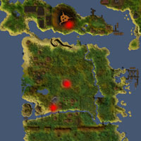
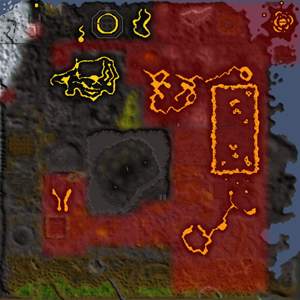
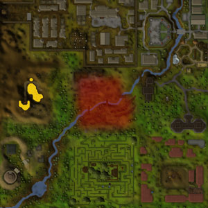

")
Summoning - Locations
Charged Summoning Obelisks | Small Obelisks | Pet Shops and Incubators
Multicombat Areas | Activities
Multicombat Areas | Activities
Charged Summoning Obelisks
Summoning obelisks are essential tools for the budding summoner. You can use them to infuse pouches, transform pouches into scrolls and to recharge your Summoning points. A number of obelisks have been discovered across RuneScape, so if you're running low on pouches, scrolls or Summoning points, you can head to one of these locations.
![[image: Location of Summoning obelisk and shop in Taverley]](../../img/main/kbase/skills/summoning/maps/locations_taverley.jpg)
Taverley Summoning obelisk and shop The obelisk is located beneath Pikkupstix's house. |
![[image: Location of Summoning obelisk and shop in Gu'Tanoth]](../../img/main/kbase/skills/summoning/maps/locations_gu_tanoth.jpg)
Gu'Tanoth Summoning obelisk and shop Located just before the gates into Gu'Tanoth. |
|
![[image: Location of Summoning obelisk in Mort Myre]](../../img/main/kbase/skills/summoning/maps/locations_mort_myre.jpg)
Mort Myre Summoning obelisk and shop Located in the Nature Spirit's grotto. |
![[image: Location of Summoning obelisk in Isafdar]](../../img/main/kbase/skills/summoning/maps/locations_isafdar.jpg)
Isafdar Summoning obelisk Located just inside the Underground Pass. |
|
![[image: Location of Summoning obelisk near Brimhaven]](../../img/main/kbase/skills/summoning/maps/locations_brimhaven.jpg)
Brimhaven Summoning obelisk Located west of Brimhaven. |
![[image: Location of Summoning obelisk near the Piscatoris Fishing Colony]](../../img/main/kbase/skills/summoning/maps/locations_piscatoris.jpg)
Piscatoris Summoning obelisk Located in a cave south of the Piscatoris Fishing Colony. |
|
![[image: Location of Summoning obelisk near Pollnivneach]](../../img/main/kbase/skills/summoning/maps/locations_pollnivneach.jpg)
Kharidian Desert Summoning obelisk Located in a cave south-west of Pollnivneach. |
Small Obelisks
In addition to the charged obelisks at which you can infuse pouches, there are dozens of partially charged, 'small' obelisks all over RuneScape that you can use to recharge your Summoning points. The list below is just a sample: you can find lots more by exploring!
 Karamja Small obelisks can be found in Shilo Village, just west of the Nature Ruins and on Karamja Volcano. |

Kharidian Desert Small obelisks can be found in at Shantay Pass, north of Pollnivneach and east of Sophanem. |
|||

Kandarin Small obelisks can be found in the Fishing Guild, just west of the Tree Gnome Agility Course, outside the Training Camp, north of the Battlefield and south-west of Port Khazard. |

Fremennik Province Small obelisks can be found south of Rellekka, south of the Lighthouse, by the docks at Etceteria, outside the Jatizso gates and just west of Neitiznot. |
Pet Shops and Incubators
Summoners may find that they want a pet that they do not need to summon, and can instead carry about, have following them or store in their bank. Pet shops are convenient places for summoners to find these pets and the resources to look after them. They also have incubators, which are necessary if you want to get an egg ready to hatch.
![[image: Location of pet shop and incubator in Taverley]](../../img/main/kbase/skills/summoning/maps/locations_pet_shop_taverley.jpg)
Taverley pet shop and incubator |
![[image: Location of pet shop and incubator in Yanille]](../../img/main/kbase/skills/summoning/maps/locations_pet_shop_yanille.jpg)
Yanille pet shop and incubator |
Multicombat Areas
Because familiars can only help you fight in multicombat areas, it's a good idea to find one with a healthy population so you can train Summoning (by using your scrolls) and other combat skills. The following maps show well-populated multicombat areas in red.
The Wilderness

The Wilderness is a vast area filled with monsters with differing Combat levels. In the very safest areas just north of the Wilderness ditch are low-level rats and skeletons, while the Deep Wilderness is home to the Chaos Elemental (level 305). This makes it a good place for summoners of all levels to work on their skills.
![[image: Multicombat areas around Rellekka]](../../img/main/kbase/skills/summoning/maps/locations_rellekka_multicombat.jpg) |
 |
|
Rellekka multicombat area The northern shore of the Fremennik Province is populated by rock crabs, a popular creature for many adventurers looking to improve their combat skills. For more information about the enemies you might slay in Rellekka, please read the Rellekka area guide. |
Battlefield multicombat area The Battlefield is the site of the fiercest fighting between the gnomes and General Khazard's army. There are dozens of creatures to fight here, which you can read about in the Tree Gnome Village and Battlefield area guide. |
|
![[image: Multicombat areas around White Wolf Mountain]](../../img/main/kbase/skills/summoning/maps/locations_white_wolf_mountain_multicombat.jpg) |
![[image: Multicombat areas around the Bandit Camp]](../../img/main/kbase/skills/summoning/maps/locations_bandit_camp_multicombat.jpg) |
|
|
White Wolf Mountain multicombat area White Wolf Mountain is, unsurprisingly, populated by white wolves. These vicious beasts make excellent training for low-level characters, and are conveniently located close to Taverley and its Summoning obelisk. Read more about White Wolf Mountain in the Taverley area guide. |
Bandit Camp multicombat area The Bandit Camp is an excellent place for training, especially if you're wearing anything marked by Zamorak or Saradomin (as this makes the bandits decidedly aggressive). Read more about the bandits in the Western Desert area guide. |
|
![[image: Multicombat areas around Jatizso and Neitiznot]](../../img/main/kbase/skills/summoning/maps/locations_jatizso_neitiznot_multicombat.jpg) |
![[image: Multicombat area around Oo'glog]](../../img/main/kbase/skills/summoning/maps/locations_oo_glog_multicombat.jpg) |
|
|
Jatizso and Neitiznot multicombat area The ice trolls that mass on the northern islands of the Fremennik Isles are all aggressive and can prove a tough match for adventurers training. There are plenty of them, though, which makes it a good place to work on Summoning. Find out more by reading the Jatizso and Neitiznot area guide. |
Oo'glog multicombat area Oo'glog's forests to the west are a testing ground for ogress warriors. As a result, the many ogresses and wolves make for an excellent training ground. Find out more by reading the Oo'glog area guide. |
In addition, the following dungeon areas are largely multicombat:
- Varrock Sewers
- Chaos Tunnels
- Waterbirth Island Dungeon
- Mole Hole
- Kalphite Hive
- Ourania Cave
- TzHaar
- God Wars Dungeon
- Stronghold of Security - Vault of War
Activities
Many activities and distractions and diversions allow familiars to be used, so you may find them an amusing way to make use of your familiars. The following games permit the use of familiars:
- Blast Furnace
- Castle Wars
- Clan Wars
- The Duel Arena - note that Summoning can be disabled during duels and tournaments
- Games Room
- Gnome Ball
- Gnome Restaurant
- Mage Arena
- Pyramid Plunder
- Ranging Guild
- Rogue Trader
- Shades of Mort'ton
- Tai Bwo Wannai Clean-up
- Tears of Guthix
- TzHaar Fight Pit

More articles in
Summoning (Members Only)
|
|
|
Further Help
If this article does not help you, you may find the following sections of the RuneScape site helpful:
|
|